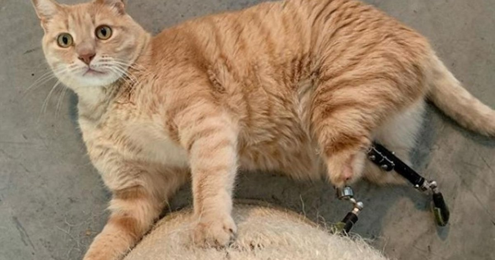
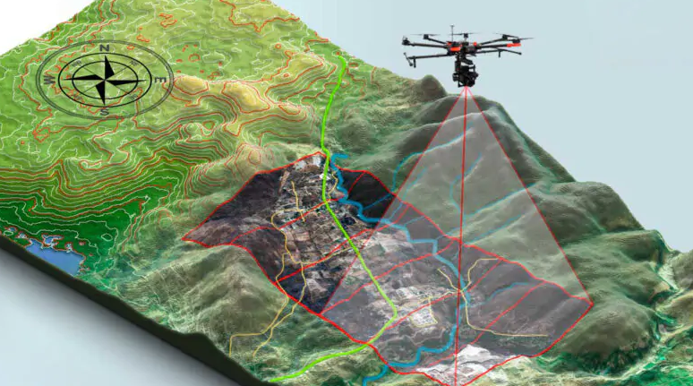

SOMOS A VOZ DOS
SEM VOZES
Lutamos com garra! Não descansamos e não paramos enquanto houver desrespeito e negligência com a vida animal.
Nossa história
A nossa história parece comum ou até mesmo simples, porém são das histórias mais simples que surgem algo bom que pode ajudar o mundo.
Certo dia, cruzamos com um cachorro abandonado nas ruas, que mais tarde apelidamos ele de guardião, esse apelido dele deu prigem ao nome da nossa ONG. Ao encontrar ele na rua e perceber que mesmo estava muito fraco, desnutrido, mal conseguia abrir os olhos, e que na verdade descobrimos que ele, era “ela” pois estava protegendo seu filhotes de um frio extremo e chuva que fazia naquele dia. Nisso, percebemos a urgência de agir e agimos.
Esse encontro motivou a fundação da nossa ONG de animais. Com o apoio de voluntários dedicados, começamos a resgatar e cuidar de animais em situações vulneráveis e com isso expandindo mais e mais nossos trabalhos e áreas de resgate que agora engloba todo tipo de animais.
Essa jornada partiu de um ato simples, mas transformador e construindo uma organização comprometida em proporcionar uma vida melhor para animais desfavorecidos.
MISSãO
Nossa missão é proteger, cuidar e advogar pelos animais de todas as espécies, promovendo o bem-estar e a coexistência harmoniosa entre humanos e animais utilizando diversos recursos tecnológicos.
Trabalhamos incansavelmente para resgatar, reabilitar e encontrar lares amorosos para os animais em necessidade, ao mesmo tempo em que educamos a comunidade sobre a importância do respeito pelos direitos dos animais e da conservação da vida selvagem.
pilares dos nossos valores

Bem-estar animal

Colocamos o bem-estar dos animais em primeiro lugar em todas as nossas ações e decisões.

Compaixão
Tratamos todos os animais com empatia e respeito, independentemente de sua espécie, raça ou origem.

Integridade
Agimos com honestidade, transparência e responsabilidade em tudo o que fazemos.

Educação
Valorizamos a conscientização e a educação como ferramentas essenciais para promover a compreensão e o respeito pelos animais.

Sustentabilidade
Buscamos práticas sustentáveis em nossa operação e advocacia para proteger o meio ambiente e a vida selvagem.
AJUDA DA TECNOLOGIA
Utilizando diversos recursos tecnologico que nos auxilia na busca e resgate e também na reabilitação de animais que teve sua integridade física afeta de alguma forma. Veja alguns caso.

Esse tucano foi resgatado e estava com o bico quebrado, utilizamos uma impressora 3D para a impressão de um novo bico com as medidas certas e após o sucesso da cirurgia, ele vive alegre e se alimentar bem.
A pandorinha, uma gatinha que sofreu um acidente e infelizmente perdeu parte das duas patinhas traseiras, com ajuda de uma empresa parceira de robótica que solidarizou com o caso, eles criaram duas patas mecânicas sobre medidas para o nosso gatinho.
Temos drones modificamos a nossa disposição para ajudar em resgates mais complicados, em locais de mais dificil acesso ao humanos. Nesse exemplo conseguimos resgate um cachorro que tinha caido dentro de um poço.
Utilizamos drones com geolocalização que mapeiam o terreno. Esse drone é muito utilizado para localização de animais em mata fechada e também auxilia na localização de possíveis acampamentos de caçadores ilegais.
Esses são só alguns dos exemplos que tecnologia que utilizamos e que já nos ajudaram nos nossos resgates e monitoramento nos resgates.
ONDE ESTAMOS?
A ONG Guardiões, atua também como uma rede em parcerias com outras ONGs e instituições privadas que apoiam nossa causa.
A atuação em rede permite a cobertura em diversos territórios onde haja a demanda de resgates
São Paulo - Sede
Rodovia Cândido Portinari KM244 - Jardinópolis Próximo a cidade de Riberão preto.E temos Filiais em
- Goiás
- Mato Grosso
- Maranhão
- Pará
- Amazonas